F
Fortuna Brand Health Tracker
Page-by-Page Feature Guide · Screenshots & Explanations
A complete visual reference of every page and feature in the platform.
Built on CBM methodology · Science-based brand measurement.
| Total Pages |
14 |
| Platform |
Next.js 14 · Tailwind CSS · Recharts |
| Methodology |
CBM (Category Buyer Memory) |
| Built by |
Prima Hanura Akbar |
| Version |
0.5 · April 2026 |
GitHub: https://github.com/matiyashu/Brand-Health-Tracker---Mental-Availability-Physical-Availability
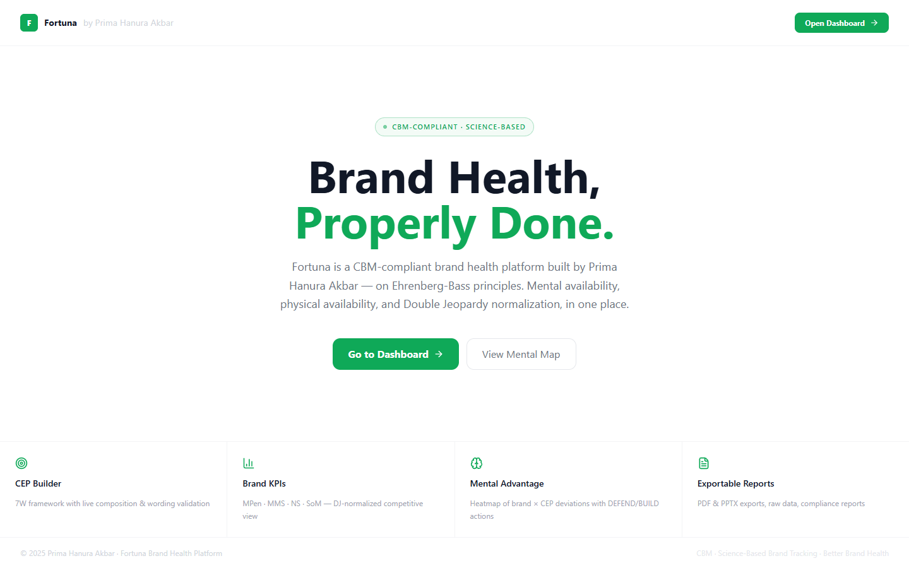
Screenshot not available
'" />
Overview
The entry point of Fortuna. Presents the platform value proposition and provides access to the dashboard. Includes a brief overview of CBM methodology and a direct call-to-action to open the dashboard.
Features & Components
- Platform introduction — Fortuna brand identity and tagline
- "Open Dashboard" button — direct entry to the analytics suite
- CBM methodology badge (Science-Based, CBM-Compliant)
- Platform description highlighting Mental Availability, Physical Availability, and Double Jeopardy normalization
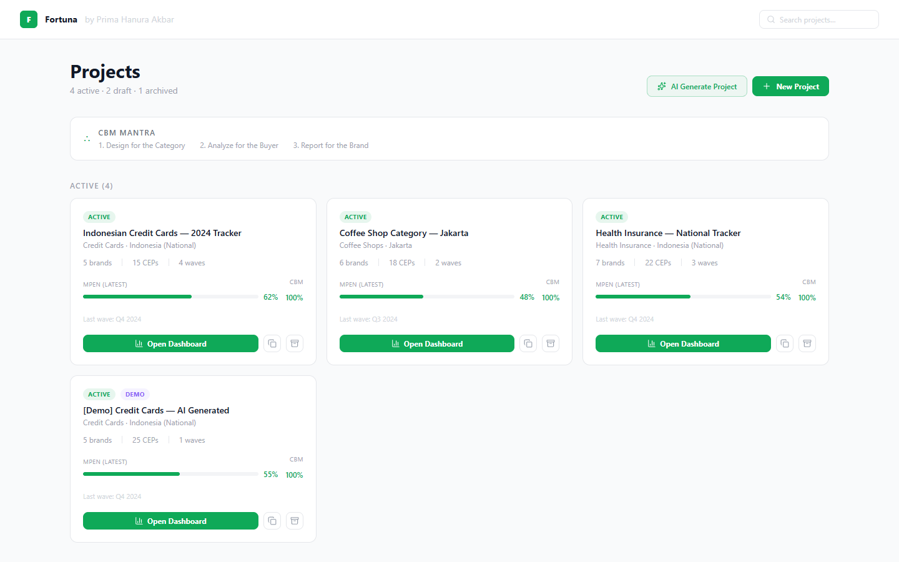
Screenshot not available
'" />
Overview
The project hub. Manage multiple brand tracking studies from one place. Switch between active projects or create new ones.
Features & Components
- Project cards — each card represents a brand tracking programme (e.g. Indonesian Credit Cards, Coffee Shops Jakarta)
- Status badges — shows wave status (Active, Draft, Completed)
- Quick-access links to each project's dashboard
- "AI Generate Project" — automatically generate a new project structure from a brand brief
- Project metadata — category, country, last wave date
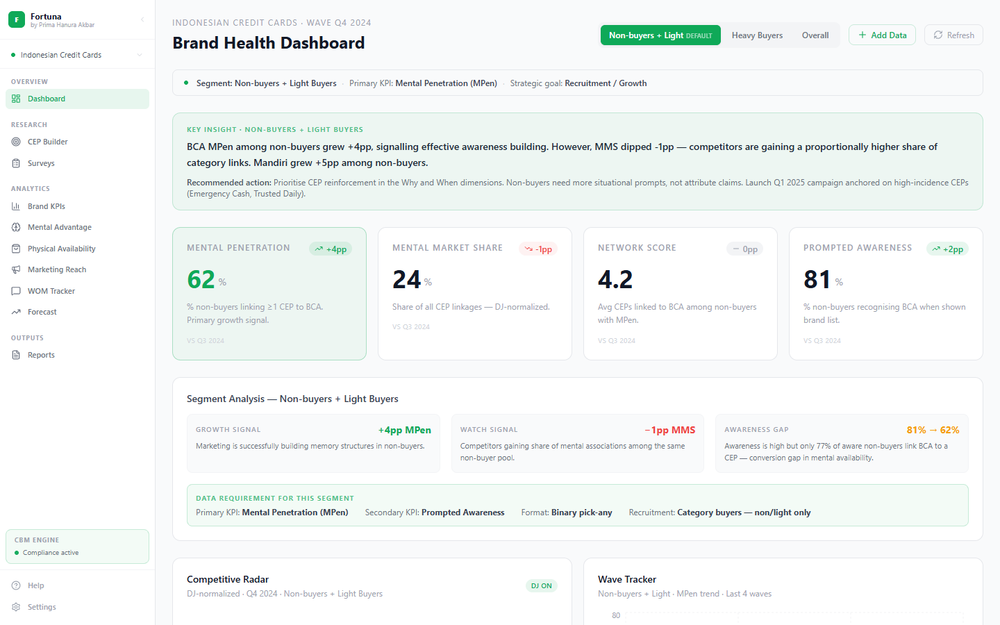
Screenshot not available
'" />
Overview
The command centre of the brand health programme. Provides a CEO-ready summary of the current wave with full segment-aware analysis. All metrics and insights update dynamically when the segment toggle changes.
Features & Components
- Segment Toggle — switch between Non-buyers + Light (default), Heavy Buyers, Overall
- Segment Banner — shows active segment, primary KPI, and strategic goal
- 4 KPI Cards — Mental Penetration, Mental Market Share, Network Score, Share of Mind with wave-on-wave deltas
- Key Insight Panel — CEO-ready headline + 3 metric analysis bars + recommendation (all segment-specific)
- MMS vs SMS Gap Diagnosis — identifies whether the gap is a mental or physical availability problem
- Add Data button — opens the data entry modal for manual input or Excel upload
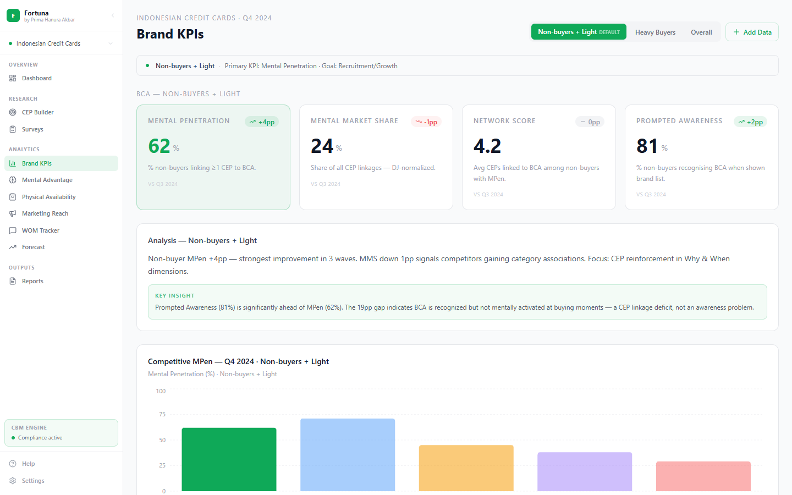
Screenshot not available
'" />
Overview
Competitive benchmarking page. Shows all brands in the category side-by-side, ranked by the active segment's focal KPI. DJ-normalized scores ensure fair comparison across brands of different sizes.
Features & Components
- Competitive Bar Chart — all brands ranked by MPen (non-light), SoM (heavy), or MMS (overall)
- Focal brand (BCA) highlighted in neon green; competitors in gray
- Segment-aware ranking — order changes between segments
- Competitive analysis panel — headline + key insight per segment
- Data requirements checklist — CBM compliance flags for the current wave
- DJ normalization applied — deviation from expected shown in data table
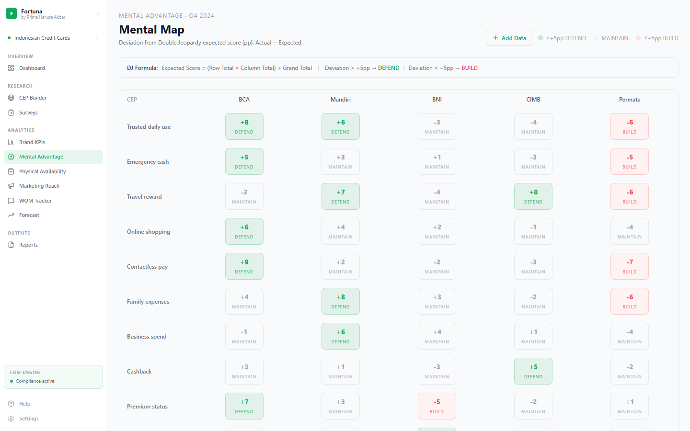
Screenshot not available
'" />
Overview
The Mental Advantage map shows a brand × CEP heatmap. Each cell displays how much a brand over- or under-performs its DJ-expected score on a specific Category Entry Point. This drives the creative and media brief.
Features & Components
- Brand × CEP Heatmap — matrix of all brands vs all CEPs with deviation scores
- DEFEND cells (green, ≥+5pp) — mental assets; feature consistently in media
- MAINTAIN cells (gray, ±4pp) — on-par performance; hold current activity
- BUILD cells (red, ≤−5pp) — mental gaps; prioritise in next campaign
- DJ Expected Score Formula — Expected = (Row Total × Col Total) ÷ Grand Total
- Strategic Summary Cards — per-brand count of DEFEND / MAINTAIN / BUILD cells
- Add Data button — upload the full linkage matrix via CSV
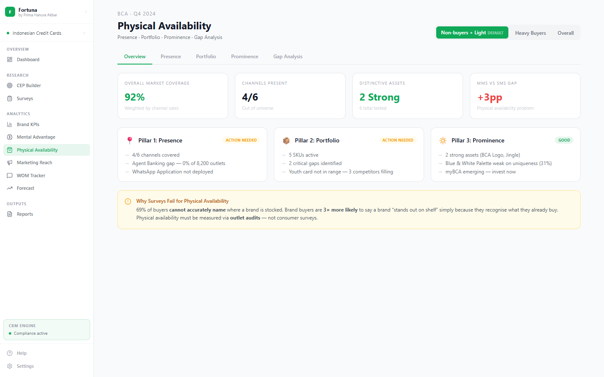
Screenshot not available
'" />
Overview
Three-pillar physical availability audit. Measures whether buyers can actually find and buy your brand across all distribution channels and touchpoints. Contains five tabs for different measurement dimensions.
Features & Components
- Overview Tab — 4 KPI cards (coverage %, active channels, strong assets, MMS gap) + pillar summary
- Presence Tab — channel coverage table vs category norm, emerging outlets tracker
- Portfolio Tab — SKU contribution matrix (sales %, penetration %, efficiency ratio), duplication of purchase gaps
- Prominence Tab — Fame × Uniqueness matrix for distinctive assets, rented prominence tracker
- Gap Analysis Tab — segment-aware MMS vs SMS diagnosis (changes content per segment toggle)
- Add Data button on each tab — specific fields and CSV templates per pillar
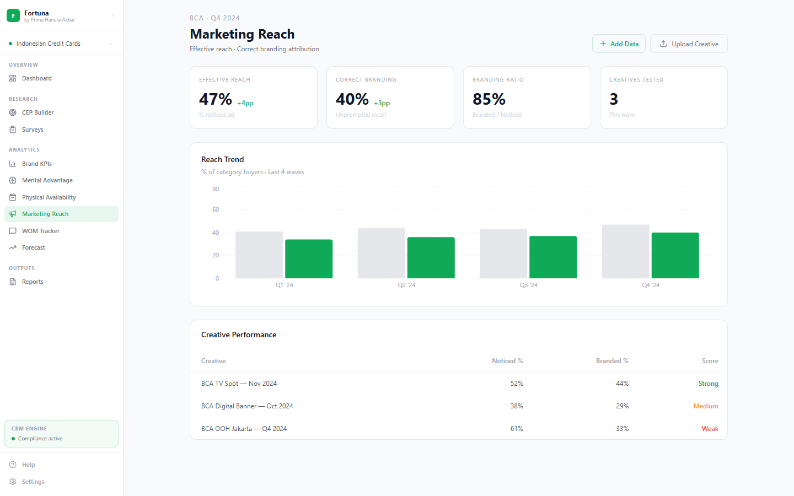
Screenshot not available
'" />
Overview
Measures the effectiveness of advertising — both whether it reached category buyers (Noticed %) and whether they correctly attributed it to the brand (Correct Branding %). Uses de-branded stimuli for accurate measurement.
Features & Components
- Summary KPI Cards — overall Noticed %, Correct Branding %, Branding Ratio, creative count
- Trend Chart — wave-on-wave bars for Noticed % vs Correctly Branded % per creative
- Creative Performance Table — all creatives with scores, Strong / Medium / Weak rating, wave period
- Branding Ratio — Branded ÷ Noticed. Below 60% flags as "vampire creative"
- Upload Creative button — store the raw ad file alongside its scores
- Add Data modal — Noticed %, Branded %, wave period per creative
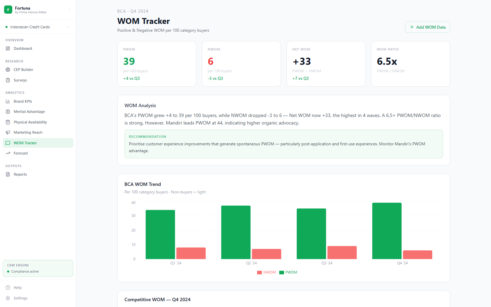
Screenshot not available
'" />
Overview
Tracks Positive and Negative Word of Mouth per 100 category buyers. Uses binary measurement (did you / didn't you recommend in the past month) — not NPS intent scale. One of the strongest leading indicators of organic brand growth.
Features & Components
- WOM Summary Cards — PWOM, NWOM, Net WOM (PWOM − NWOM), WOM Ratio (PWOM ÷ NWOM)
- Competitive WOM Table — all brands ranked by Net WOM with PWOM and NWOM breakdown
- Trend Chart — PWOM and NWOM bars wave over wave for BCA
- Analysis Panel — segment-aware headline + recommendation
- WOM Ratio target: >4× is considered strong advocacy balance
- Add WOM Data button — enter per-brand PWOM and NWOM per wave
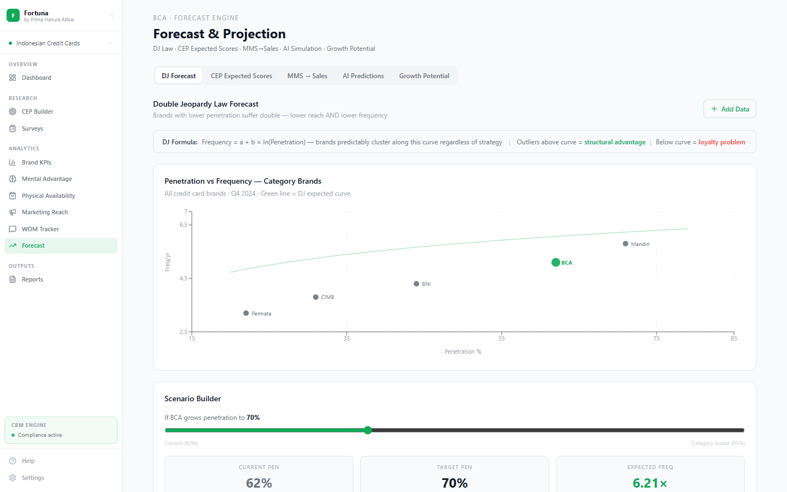
Screenshot not available
'" />
Overview
Five forward-looking forecast tools in one page. Covers mechanistic laws (Double Jeopardy), formula-based projections (CEP expected scores), statistical correlation (MMS→Sales), AI simulation, and growth potential mapping.
Features & Components
- Tab 1 — DJ Forecast: Scatter chart of brands on DJ curve + interactive scenario builder (drag pen target → predicted frequency)
- Tab 2 — CEP Expected Scores: Full brand × CEP numerical matrix with Actual / Expected / Deviation columns
- Tab 3 — MMS → Sales: Dual-line chart history + projection (r=0.83 correlation, 1–2 quarter lag)
- Tab 4 — AI Predictions: Media spend multiplier slider, category twin benchmarks, AI-generated trend alerts
- Tab 5 — Growth Potential: MPen by segment cards, growth waterfall chart, Recruitment vs Network Size priority framework
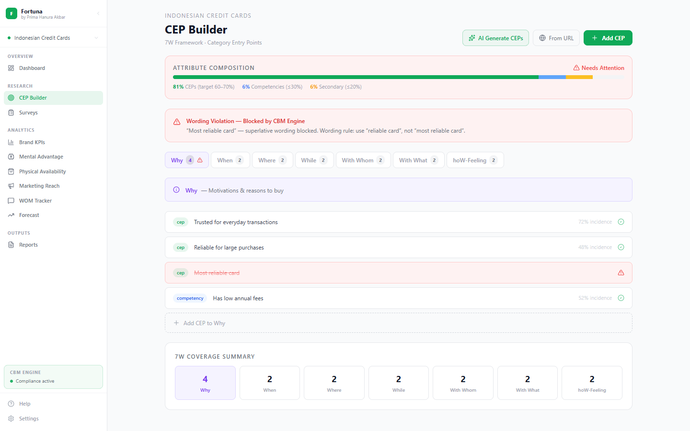
Screenshot not available
'" />
Overview
Design a CBM-compliant attribute list for your brand tracking survey. Uses the 7W framework to generate Category Entry Points. The CBM Engine validates each attribute and flags violations before survey launch.
Features & Components
- 7W Framework Tabs — Who, What, When, Where, Why, With What, With Whom
- Attribute List Builder — add, edit, classify attributes as CEP / Baseline / Secondary
- Composition Meter — visual gauge showing % split; target 60–70% CEPs
- CBM Violation Flags — red border on attributes with superlatives, brand-specific wording, or duplicates
- AI Generate button — auto-draft CEPs from a brand brief or URL
- Violation types caught: modified wording, brand-specific CEPs, duplicate occasions
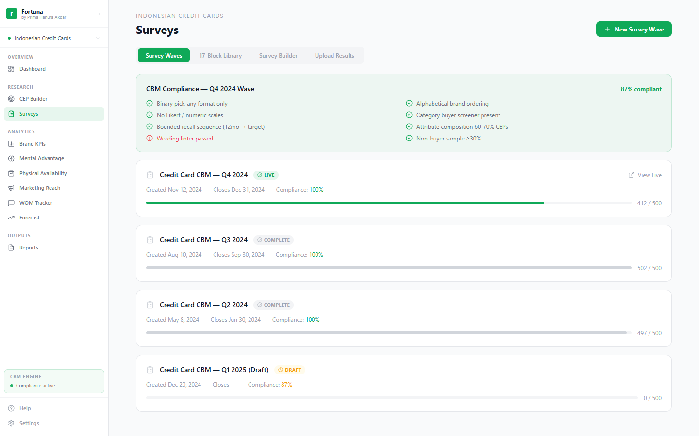
Screenshot not available
'" />
Overview
Build and manage brand health fieldwork waves. Includes a block-based survey canvas, a 17-block question library, compliance checking, and a results upload pipeline.
Features & Components
- Block Library — 17 question blocks categorised as Core (mandatory), Standard (recommended), Optional
- Survey Canvas — drag-and-drop blocks to build a wave in the correct CBM order
- Core Blocks (teal border) — mandatory, cannot be removed: Category Screener, Brand Awareness, CEP Linkage, Purchase Behaviour
- CBM Compliance Panel — real-time flags before survey export
- Upload Results Tab — drag-and-drop Excel fieldwork data with 5-row preview
- AI Analysis — auto-generated summary of key changes after upload
- WhatsApp distribution support (via Settings → Integrations)
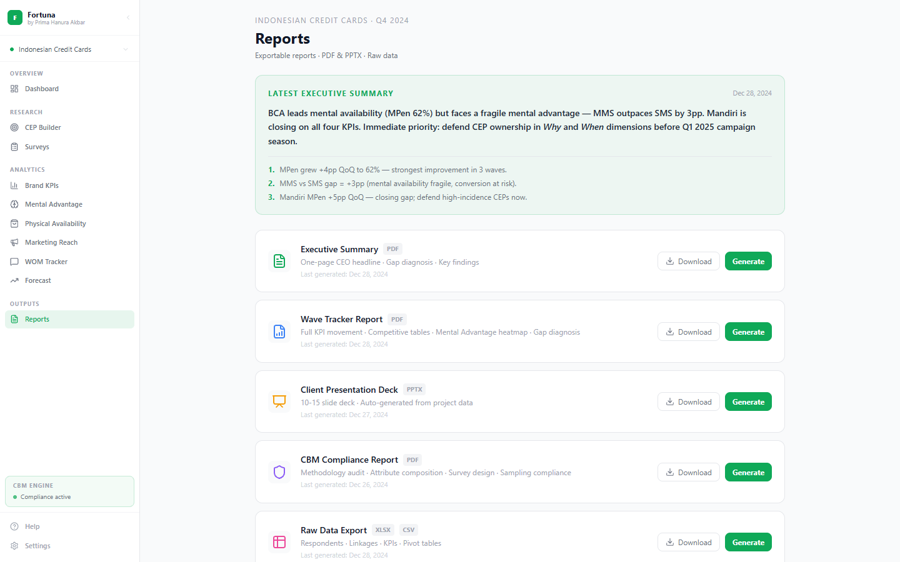
Screenshot not available
'" />
Overview
Generate client-ready outputs from the latest wave data. Four output formats covering different audiences — from C-suite PDF summaries to pivot-ready Excel exports.
Features & Components
- Executive Summary PDF — one-page CEO brief, auto-populated from latest wave
- Full Report PPTX — multi-slide deck covering all analytics pages
- CBM Compliance Report — methodology audit before client delivery
- Raw Data Export XLSX — respondent-level or aggregate, pivot-ready format
- Wave period selector — choose which wave to generate the report from
- Section selector — choose which pages to include in PPTX
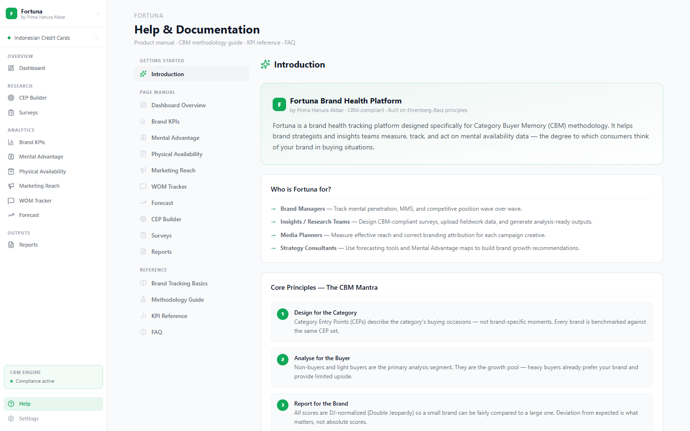
Screenshot not available
'" />
Overview
Full in-app product manual with three sections: Getting Started (intro + first-time workflow), Page Manual (how to use and interpret every page), and Reference (methodology, KPI formulas, FAQ).
Features & Components
- Getting Started — platform introduction, CBM Mantra, platform structure, 7-step first-time workflow
- Page Manual — 10 pages covered with step-by-step how-to and data interpretation guides
- CBM Basics — what brand tracking is, what CBM is, why non-buyers are primary
- Methodology Guide — survey design rules, attribute composition, DJ normalization, analysis defaults
- KPI Reference — 8 KPIs with formula, range, and target benchmark
- FAQ — 10 common questions with detailed answers
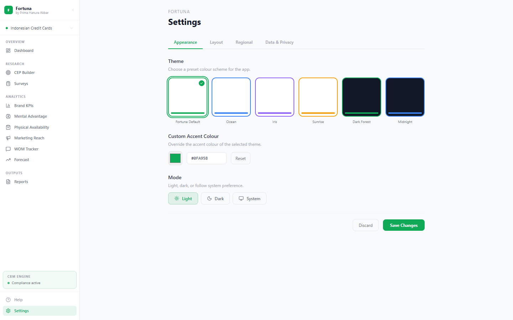
Screenshot not available
'" />
Overview
Platform configuration. Manage theme preferences, integrations, data connections, and account settings.
Features & Components
- Theme settings — light/dark mode toggle
- Integrations panel — WhatsApp Business API, Anthropic Claude API, Resend email
- Data connections — database and external data source configuration
- Account and organisation management